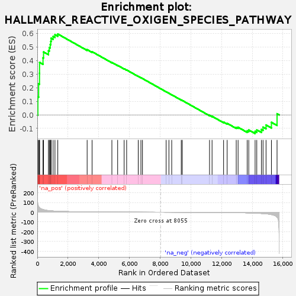
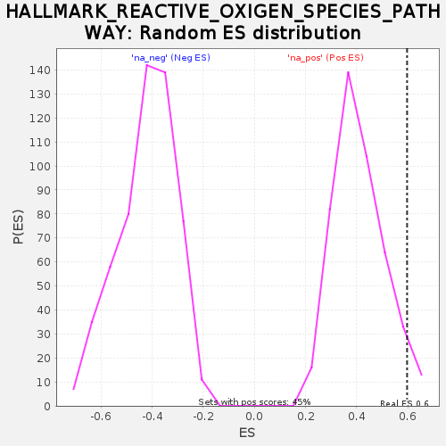

| | | Dataset | DiseaseStatus_ctr_vs_case |
| Phenotype | NoPhenotypeAvailable |
| Upregulated in class | na_pos |
| GeneSet | HALLMARK_REACTIVE_OXIGEN_SPECIES_PATHWAY |
| Enrichment Score (ES) | 0.5974567 |
| Normalized Enrichment Score (NES) | 1.4547802 |
| Nominal p-value | 0.048780486 |
| FDR q-value | 0.074295 |
| FWER p-Value | 0.347 |
Table: GSEA Results Summary

Fig 1: Enrichment plot: HALLMARK_REACTIVE_OXIGEN_SPECIES_PATHWAY
Profile of the Running ES Score & Positions of GeneSet Members on the Rank Ordered List
| SYMBOL | RANK IN GENE LIST | RANK METRIC SCORE | RUNNING ES | CORE ENRICHMENT | | 1 | SOD1 | 37 | 77.672 | 0.1334 | Yes |
| 2 | FTL | 87 | 57.023 | 0.2299 | Yes |
| 3 | SRXN1 | 143 | 46.706 | 0.3081 | Yes |
| 4 | NQO1 | 146 | 45.838 | 0.3881 | Yes |
| 5 | GCLM | 372 | 27.518 | 0.4218 | Yes |
| 6 | GSR | 407 | 25.901 | 0.4650 | Yes |
| 7 | PRDX6 | 726 | 16.779 | 0.4740 | Yes |
| 8 | TXNRD1 | 783 | 15.668 | 0.4979 | Yes |
| 9 | PRDX1 | 842 | 14.859 | 0.5201 | Yes |
| 10 | GLRX | 879 | 14.313 | 0.5429 | Yes |
| 11 | GLRX2 | 902 | 14.037 | 0.5660 | Yes |
| 12 | TXN | 1030 | 12.558 | 0.5799 | Yes |
| 13 | GCLC | 1151 | 11.361 | 0.5921 | Yes |
| 14 | LSP1 | 1335 | 9.733 | 0.5975 | Yes |
| 15 | PPP2R4 | 3247 | 3.443 | 0.4819 | No |
| 16 | SBNO2 | 3570 | 2.957 | 0.4665 | No |
| 17 | SCAF4 | 4859 | 1.553 | 0.3873 | No |
| 18 | MSRA | 5234 | 1.258 | 0.3657 | No |
| 19 | PRDX2 | 5658 | 0.965 | 0.3405 | No |
| 20 | ATOX1 | 5820 | 0.864 | 0.3317 | No |
| 21 | NDUFS2 | 6575 | 0.492 | 0.2846 | No |
| 22 | NDUFB4 | 6750 | 0.428 | 0.2743 | No |
| 23 | HHEX | 6851 | 0.390 | 0.2686 | No |
| 24 | MBP | 8394 | -0.126 | 0.1707 | No |
| 25 | FES | 8574 | -0.187 | 0.1596 | No |
| 26 | HMOX2 | 8756 | -0.251 | 0.1485 | No |
| 27 | NDUFA6 | 9378 | -0.515 | 0.1099 | No |
| 28 | STK25 | 9446 | -0.545 | 0.1066 | No |
| 29 | TXNRD2 | 11220 | -1.750 | -0.0032 | No |
| 30 | EGLN2 | 11384 | -1.898 | -0.0102 | No |
| 31 | G6PD | 12135 | -2.799 | -0.0531 | No |
| 32 | ABCC1 | 12368 | -3.188 | -0.0622 | No |
| 33 | MGST1 | 12959 | -4.461 | -0.0920 | No |
| 34 | JUNB | 13080 | -4.750 | -0.0913 | No |
| 35 | CDKN2D | 13673 | -6.655 | -0.1174 | No |
| 36 | OXSR1 | 13775 | -7.090 | -0.1114 | No |
| 37 | SOD2 | 14189 | -9.317 | -0.1214 | No |
| 38 | PRDX4 | 14297 | -10.073 | -0.1106 | No |
| 39 | CAT | 14600 | -12.525 | -0.1079 | No |
| 40 | ERCC2 | 14705 | -13.730 | -0.0906 | No |
| 41 | PDLIM1 | 14901 | -16.272 | -0.0745 | No |
| 42 | PRNP | 15251 | -24.030 | -0.0547 | No |
| 43 | GPX4 | 15618 | -49.666 | 0.0088 | No |
Table: GSEA details [plain text format]

Fig 2: HALLMARK_REACTIVE_OXIGEN_SPECIES_PATHWAY: Random ES distribution
Gene set null distribution of ES for HALLMARK_REACTIVE_OXIGEN_SPECIES_PATHWAY